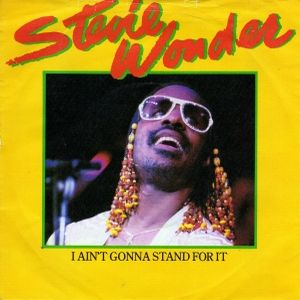
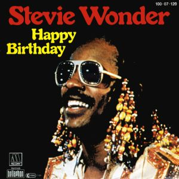
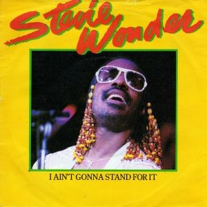
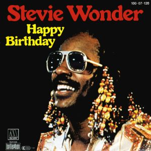
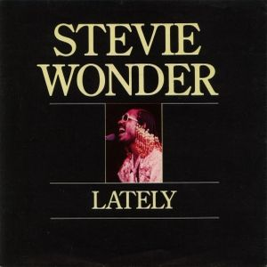
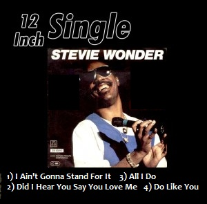

Leaving behind a great step and cornering the album "Journey Through the Secret Life of Plants", Stevie starts this new era with more commercial sound. In
Hotter Than July uses the latest digital technology; the Sony PCM serves to translate the sounds of his
head.
His single "Master Blaster" concept inspired by the reggae of Bob Marley serves to express their aversion to war is all a hit. His song "Happy Birthday" in honor of Martin Luther King help for the "King's Birthday" and make the day on January 15 a national holiday in the United States and his great ballad "Lately" is in years subsequent versions by many artists as Jodeci, Andy Abraham or George Benson.

 




